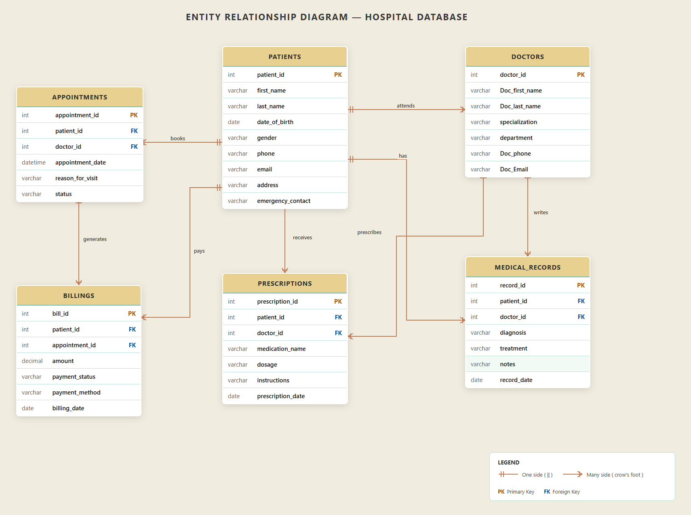

Database modeling and relational design for the NeuroStack Patient Management System.
In Week 9, we designed the database structure for the NeuroStack Patient Management System. The goal was to build a scalable and organized relational database that supports patient management, doctor records, appointments, prescriptions, billing, and medical history.
Stores patient details including personal and emergency contact information.
Stores doctor details, specialization, and department information.
Tracks patient-doctor appointments and visit scheduling.
Stores diagnosis, treatment notes, and medical history.
Manages medication details, dosage, and prescription instructions.
Handles payment records, billing status, and transaction details.
The ER Diagram visually represents the relationships between all core entities and demonstrates how the database is structured.

This deliverable helped us understand that a well-structured database is the foundation of any scalable software system. It improved our understanding of entity relationships, normalization, and real-world database planning.